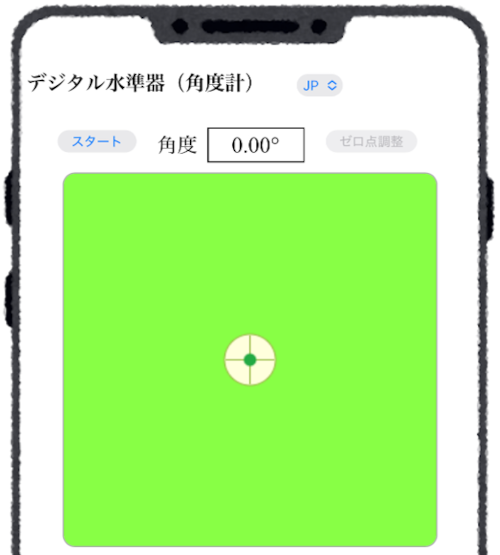
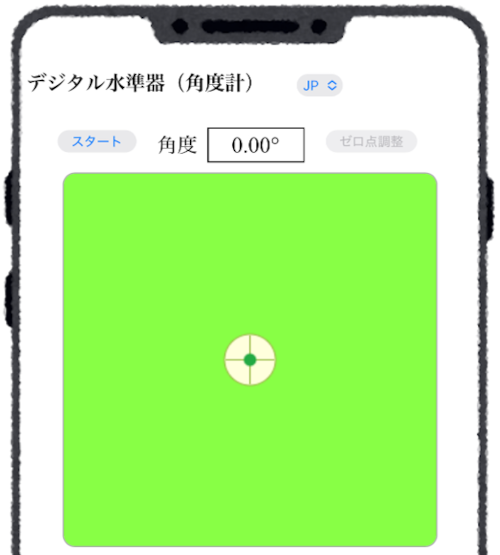
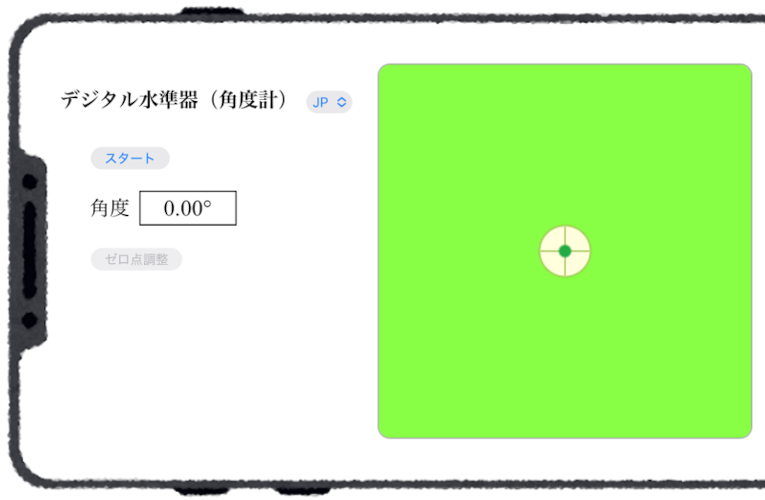
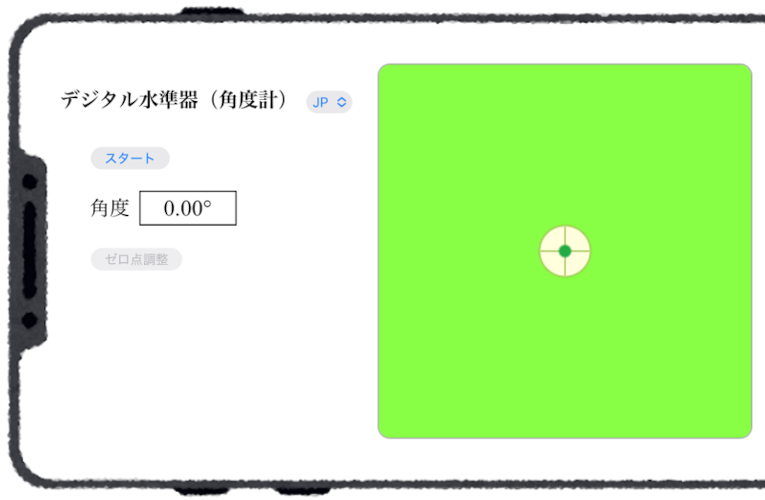

■ 画面構成
水準器アプリの画面(縦向き)


水準器（角度計）アプリにアクセスすると図のような画面が現れる．緑色の領域はアルコール水準器 (spirit level) をイメージしており，黄緑の液体の中に気泡（中央の白い円）が浮いている様子を表している．
- 「スタート」ボタン
水準計を起動（スタート）して，水平面に対するデバイスが置かれた面の角度を測定する．起動すると「ストップ」ボタンになり，起動している状態でクリックすると停止（ストップ）する． - 角度表示領域
「スタート」ボタンの右側（横向きの場合は下側）の枠内に測定した角度を表示する． - 「ゼロ点調整」ボタン
水準器が起動している状態で「ゼロ点調整」ボタンをクリックすると，そのときのデバイスの置かれた面の角度をゼロ（基準）として角度を測定するモードとなる．再度，このボタンをクリックすると解除される．
水準器アプリの画面(横向き)


デバイス画面の自動回転を設定している場合，デバイスを横に向けると．表示が横向きに切り替わる．
水準器の「スタート」ボタンをクリックし，デバイスを斜面に置くと斜面の傾斜角を測定することができる．図のようにデバイスを斜面上向にして置くと，画面上の気泡は斜面の上方向に移動し，気泡と画面の中心点を結ぶ線（鉛直線の射影線）が表示される．
斜面に置かれたスマートフォン

傾斜30°の斜面に置いたときの画面